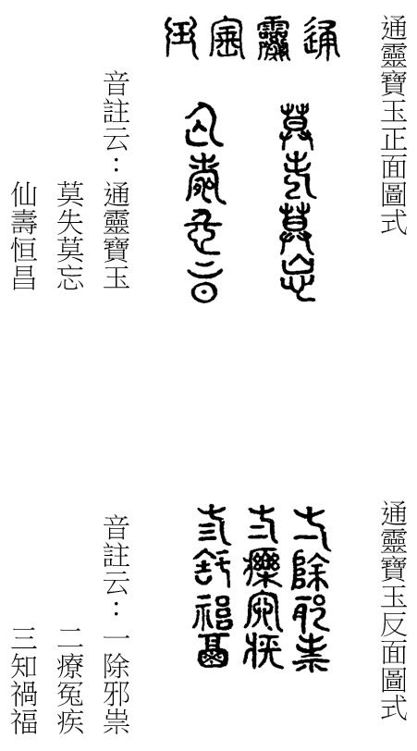
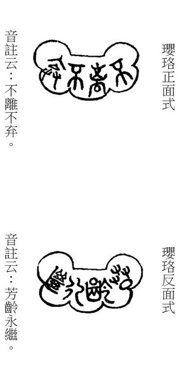

幻情濃處故多嗔，豈獨顰兒愛妒人。莫把心思勞展轉，百年事業總非真。
幻情濃處故多嗔，豈獨顰兒愛妒人。莫把心思勞展轉，百年事業總非真。
題曰：
古鼎新烹鳳髓香，那堪翠斝貯瓊漿。
莫言綺縠無風韻，試看金娃對玉郎。
話說鳳姐和寶玉回家，見過衆人。寶玉先便回明賈母，秦鍾要上家塾之事，自己也有了個伴讀的朋友，正好發奮，
 未必。又著實的稱贊秦鍾的人品行事，最使人憐愛。
未必。又著實的稱贊秦鍾的人品行事，最使人憐愛。 「憐愛」二字寫出寶玉真神，若是別個斷不肯透露。鳳姐又在一旁幫著說「過日他還來拜老祖宗」等語，鳳姐幫話是為秦氏，用意屈盡人情。說的賈母喜悅起來。止此便十成了，不必繁文再表，故妙。偷渡金針法。鳳姐又趁勢請賈母後日過去看戲。賈母雖年高，却極有興頭。為賈母寫傳。至後日，又有尤氏來請，遂携了王夫人、林黛玉、寶玉等過去看戲。至晌午，賈母便回來歇息了。
「憐愛」二字寫出寶玉真神，若是別個斷不肯透露。鳳姐又在一旁幫著說「過日他還來拜老祖宗」等語，鳳姐幫話是為秦氏，用意屈盡人情。說的賈母喜悅起來。止此便十成了，不必繁文再表，故妙。偷渡金針法。鳳姐又趁勢請賈母後日過去看戲。賈母雖年高，却極有興頭。為賈母寫傳。至後日，又有尤氏來請，遂携了王夫人、林黛玉、寶玉等過去看戲。至晌午，賈母便回來歇息了。 叙事有法，若只管寫看戲，便是一無見世面之暴發貧婆矣。寫「隨便」二字，興高則往，興敗則回，方是世代封君正傳。且「高興」二字，又可生出多少文章來。王夫人本是好清淨的，偏與邢夫人相犯，然却是各有各傳。見賈母回來，也就回來了。然後鳳姐坐了首席，盡歡至晚無話。細甚，交代畢。
叙事有法，若只管寫看戲，便是一無見世面之暴發貧婆矣。寫「隨便」二字，興高則往，興敗則回，方是世代封君正傳。且「高興」二字，又可生出多少文章來。王夫人本是好清淨的，偏與邢夫人相犯，然却是各有各傳。見賈母回來，也就回來了。然後鳳姐坐了首席，盡歡至晚無話。細甚，交代畢。
却說寶玉因送賈母回來，待賈母歇了中覺，意欲還去看戲取樂，又恐擾的秦氏等人不便，全是體貼功夫。因想起近日薛寶釵在家養病，未去親候，意欲去望他一望。若從上房後角門過去，又恐遇見別事纏繞，再或可巧遇見他父親，本意正傳，實是曩時苦惱，嘆嘆！更為不妥，細甚。寧可繞遠路罷了。當下衆嬤嬤丫鬟伺候他換衣服，見他不換，仍出二門去了。衆嬤嬤丫鬟只得跟隨出來，還只當他去那府中看戲。誰知到了穿堂，便向東向北繞廳後而去。偏頂頭遇見了門下清客相公詹光妙！蓋沾光之意。、單聘仁更妙！蓋善於騙人之意。二人走來，一見了寶玉，便都笑著趕上來，一個抱住腰，一個携著手，都道：「我的菩薩哥兒，沒理沒倫，口氣畢肖。我說作了好夢呢，好容易得遇見了你。」說著，請了安，又問好，嘮叨了半日，方纔走開。 一路用淡三色烘染、行雲流水之法，寫出貴公子家常不即不離氣致。經歷過者則喜其寫真，未經者恐不免嫌繁。老嬤嬤叫住，因問：「你二位爺是從老爺跟前來的不是？」為玉兄一人，却人人俱有心事，細緻。他二人點頭道：「老爺在夢坡齋使人起遐思。◇妙！夢遇坡仙之處也。小書房裡歇中覺呢，不妨事的。」玉兄知己。一笑。一面說，一面走了。說的寶玉也笑了。
一路用淡三色烘染、行雲流水之法，寫出貴公子家常不即不離氣致。經歷過者則喜其寫真，未經者恐不免嫌繁。老嬤嬤叫住，因問：「你二位爺是從老爺跟前來的不是？」為玉兄一人，却人人俱有心事，細緻。他二人點頭道：「老爺在夢坡齋使人起遐思。◇妙！夢遇坡仙之處也。小書房裡歇中覺呢，不妨事的。」玉兄知己。一笑。一面說，一面走了。說的寶玉也笑了。
於是轉彎向北奔梨香院來。吃冷香丸，住梨香院。有趣。可巧銀庫房的總領名喚吳新登妙！蓋云無星戥也。與倉上的頭目名戴良，妙！蓋云大量也。還有幾個管事的頭目，共有七個人，從賬房裡出來，一見了寶玉，趕來都一齊垂手站住。獨有一個買辦名喚錢華的，亦錢開花之意。隨事生情，因情得文。因他多日未見寶玉，忙上來打千兒請安，寶玉忙含笑携他起來。衆人都笑說：「前兒在一處看見二爺寫的斗方，字法越發好了，多早晚賞我們幾張貼貼。」余亦受過此騙，今閱至此，赧然一笑。此時有三十年前向余作此語之人在側，觀其形已皓首駝腰矣，乃使彼亦細聽此數語，彼則潸然泣下，余亦為之敗興。寶玉笑道：「在那裡看見了？」衆人道：「好幾處都有，都稱贊的了不得，還和我們尋呢。」侍奉上人者，無此等見識、無此等迎奉者，難乎免於厭棄，嗚呼哀哉。寶玉笑道：「不值什麽，你們說給我的小么兒們就是了。」一面說，一面前走，衆人待他過去，方都各自散了。未入梨香院，先故作若許波瀾曲折。瞧他無意中又寫出寶玉寫字來，固是愚弄公子閒文，然亦是暗逗寶玉歷來文課事。不然，後文豈不太突？
閒言少述，此處用此句最當。且說寶玉來至梨香院中，先入薛姨媽室中來，正見薛姨媽打點針黹與丫鬟們呢。寶玉忙請了安，薛姨媽忙一把拉了他，抱入懷內，笑說：「這麽冷天，我的兒，難為你想著來，快上炕來坐著罷。」命人倒滾滾的茶來。寶玉因問：「哥哥不在家？」薛姨媽嘆道：「他是沒籠頭的馬，天天逛不了，那裡肯在家一日。」寶玉道：「姐姐可大安了？」薛姨媽道：「可是呢，你前兒又想著打發人來瞧他。他在裡間不是，你去瞧他。裡間比這裡暖和，那裡坐著，我收拾收拾就進去和你說話兒。」作者何等筆法。「裡間裡」三字，恐文氣不足，又貫之以「比這裡和暖」。其筆真是神龍雲中弄影，是必當進去的神理。
寶玉聽說，忙下了炕，來至裡間門前，只見吊著半舊的紅綢軟簾。從門外看起，有層次。寶玉掀簾一邁步進去，先就看見薛寶釵坐在炕上作針綫，頭上挽著漆黑油光的䰖兒，蜜合色棉襖，玫瑰紫二色金銀鼠比肩褂，葱黃綾棉裙，一色半新不舊，看來不覺奢華。唇不點而紅，眉不畫而翠；臉若銀盆，眼如水杏。罕言寡語，人謂藏愚；安分隨時，自云守拙。這方是寶卿正傳。與前寫黛玉之傳一齊參看，各極其妙，各不相犯，使其人難其左右於毫末。 畫神鬼易，畫人物難。寫寶卿正是寫人之筆，若與黛玉並寫更難。今作者寫得一毫難處不見，且得二人真體實傳，非神助而何？寶玉一面看，一面口內問：「姐姐可大愈了？」寶釵抬頭與寶玉邁步針對。只見寶玉進來，此則神情盡在煙飛水逝之間，一展眼便失於千里矣。連忙起來含笑答說：「已經大好了，倒多謝記挂著。」說著，讓他在炕沿上坐了，即命鶯兒斟茶來。一面又問老太太、姨媽安，別的姊妹們都好。這是口中如此。一面「一面」二，口中眼中，神情俱到。看寶玉頭上戴著縲絲嵌寶紫金冠，額上勒著二龍搶珠金抹額，身上穿著秋香色立蟒白狐腋箭袖，繫著五色蝴蝶鑾縧〔一〕，項上挂著長命鎖、記名符，另外有那一塊落草時啣下來的寶玉。
寶釵因笑說道：「成日家說你的這玉，究竟未曾細細的賞鑑，我今兒倒要瞧瞧。」自首回至此，回回說有通靈玉一物，余亦未曾細細賞鑑，今亦欲一見。說著便挪近前來。寶玉亦凑了上去，從項上摘了下來，遞在寶釵手內。寶釵托於掌上，試問石兄：此一托，比在青埂峰下猿啼虎嘯之聲何如？ 余代答曰：「遂心如意。」只見大如雀卵，體。燦若明霞，色。瑩潤如酥，質。五色花紋纏護。文。這就是大荒山中青埂峰下的那塊頑石的幻相。註明。後人曾有詩嘲云：
女媧煉石已荒唐，又向荒唐演大荒。
失去幽靈真境界，幻來親就臭皮囊。二語可入道，故前引莊叟秘訣。
好知運敗金無彩，又夾入寶釵，不是虛圖對得工。堪嘆時乖玉不光。二語雖粗，本是真情，然此等詩只宜如此。為天下兒女一哭。
白骨如山忘姓氏，無非公子與紅妝。批得好。末二句似與題不切，然正是極貼切語。
那頑石亦曾記下他這幻相並癩僧所鐫的篆文，今亦按圖畫於後。但其真體最小，方能從胎中小兒口中啣下。今若按其體畫，恐字跡過於微細，使觀者大廢眼光，亦非暢事。故今按其形式，無非略展放些規矩，使觀者便於燈下醉中可閱。今註明此故，方無「胎中之兒口有多大，怎得啣此狼犺蠢大之物」等語之謗。又忽作此數語，以幻弄成真，以真弄成幻。真真假假，恣意遊戲於筆墨之中，可謂狡猾之至。◇作人要老誠，作文要狡猾。

寶釵看畢，余亦想見其物矣。前回中總用草蛇灰綫寫法，至此方細細寫出，正是大關節處。又從翻過正面來細看，可謂真奇之至。口內唸道：「莫失莫忘，仙壽恒昌。」是心中沉吟，神理。 《石頭記》立誓一筆不寫一家文字。唸了兩遍，乃回頭向鶯兒笑道：「你不去倒茶，也在這裡發呆作什麽？」請諸公掩卷合目想其神理，想其坐立之勢，想寶釵面上口中。真妙！鶯兒嘻嘻笑道：「我聽這兩句話，倒像和姑娘的項圈上的兩句話是一對兒。」又引出一個金項圈來，鶯兒口中說出方妙。 恨顰兒不早來聽此數語，若使彼聞之，不知又有何等妙論趣語以悅我等心臆。寶玉聽了，忙笑道：「原來姐姐那項圈上也有八個字，補出素日眼中雖見而實未留心。我也鑑賞鑑賞！」寶釵道：「你別聽他的話，沒有什麽字。」寶玉笑央：「好姐姐，你怎麽瞧我的呢！」寶釵被他纏不過，因說道：「是個人給了兩句吉利話兒，「也是個」等字移換得巧妙，其雅量尊重在不言之表。〔二〕所以鏨上了，叫天天帶著，不然，沉甸甸的有什麽趣兒。」一句駡死天下濃妝艶飾富貴中之脂妖粉怪。一面說，一面解排扣，細。從裡面大紅襖上打開，好看煞人。將那珠寶晶瑩黃金燦爛的瓔珞掏將出來。按，瓔珞者，頸飾也！想近俗即呼為項圈者是矣。寶玉忙托了鎖看時，果然一面有四個篆字，兩面八個，共成兩句吉讖。亦曾按式畫下形相：

合前讀之，豈非一對？  「不離不棄」與「莫失莫忘」相對，所謂愈出愈奇。◇「芳齡永繼」又與「仙壽恒昌」一對。請合而讀之。問諸公歷來小說中，可有如此可巧奇妙之文，以換新眼目？
「不離不棄」與「莫失莫忘」相對，所謂愈出愈奇。◇「芳齡永繼」又與「仙壽恒昌」一對。請合而讀之。問諸公歷來小說中，可有如此可巧奇妙之文，以換新眼目？
寶玉看了，也唸兩遍，又唸自己的兩遍，因笑問：「姐姐這八個字倒真與我的是一對。」余亦謂是一對，不知干支中四柱八字可與卿亦對否？ 花看半開，酒飲微醉，此文字是也。鶯兒笑道：「是個癩頭和尚送的，他說必須鏨在金器上……」和尚在幻境中作如此勾當，亦屬多事。寶釵不待說完，便嗔他不去倒茶，「嗔」字一截，截得妙。一面又問寶玉從那裡來。妙神妙理，請觀者自思。
寶玉與寶釵相近，只聞一陣陣凉森森甜絲絲的幽香，這方是花香襲人正意。竟不知係何香氣，遂問：「姐姐熏的是什麽香？我竟從未聞見過這味兒。」不知比「群芳髓」又何如？寶釵笑道：「我最怕熏香，好好的衣服，熏的煙燎火氣的。」真真駡死一干濃妝艶飾鬼怪。寶玉道：「既如此，這是什麽香？」寶釵想了一想，笑道：「是了，是我早起吃了丸藥的香氣。」點「冷香丸」。寶玉笑道：「什麽丸藥這麽好聞？好姐姐，給我一丸嚐嚐。」仍是小兒語氣。究竟不知別個小兒，只寶玉如此。寶釵笑道：「又混鬧了，一個藥也是混吃的？」
一語未了，每善用此等轉換法。忽聽外面人說：「林姑娘來了。」緊處愈緊，密不容針之文。話猶未了，林黛玉已搖搖二字畫出身。的走了進來，一見了寶玉，便笑道：「噯喲，我來的不巧了！」奇文，我實不知顰兒心中是何丘壑。 怪急語。寶玉等忙起身笑讓坐，寶釵因笑道：「這話怎麽說？」不得不問。黛玉笑道：「早知他來，我就不來了。」更叫人急煞。寶釵道：「我更不解這意。」黛玉笑道：「要來時一群都來，要不來一個也不來，今兒他來了，明兒我再來，如此間錯開了來著，豈不天天有人來了？强詞奪理。也不至於太冷落，也不至於太熱鬧了。好點綴。姐姐如何反不解這意思？」吾不知顰兒以何物為心為齒，為口為舌，實不知胸中有何丘壑。
寶玉因見他外面罩著大紅羽緞對衿褂子，岔開文字，[避]繁章法，妙極妙極！ 又一轉換。若無此則必有寶玉之窮究，而寶釵之重複，加長無味。此等文章是《西遊記》的請觀世音菩薩，菩薩一到，無不掃地完結者。因問：「下雪了麽？」地下婆娘們道：「下了這半日雪珠兒了。」寶玉道：「取了我的斗篷來了不曾？」黛玉便道：「是不是？我來了你就該去了。」實不知有何丘壑。寶玉笑道：「我多早晚說要去了？不過是拿來預備著。」寶玉的奶母李嬤嬤因說道：「天又下雪，也好早晚的了，就在這裡同姐姐妹妹一處頑頑罷。姨媽那裡擺茶果子呢。我叫丫頭去取了斗篷來，說給小么兒們散了罷。」寶玉應允。李嬤嬤出去，命小厮們都各散去不提。極力寫嬤嬤周旋，是反襯下文。
這裡薛姨媽已擺了幾樣細巧茶果，留他們吃茶。是溺愛，非勢利。寶玉因誇前日在那府裡珍大嫂子的好鵝掌、鴨信。為前日秦鍾之事，恐觀者忘却，故忙中閒筆，重一渲染。薛姨媽聽了，忙也把自己糟的取了些來與他嚐。是溺愛，非誇富。 不寫酒先寫糟，將糟引酒。寶玉笑道：「這個須得就酒纔好。」薛姨媽便命人去灌了些上等的酒來。愈見溺愛。李嬤嬤便上來道：「姨太太，酒倒罷了。」余最恨無調教之家，任其子侄肆行哺啜，觀此則知大家風範。寶玉笑央道：「好媽媽，我只吃一鍾。」李嬤嬤道：「不中用！當著老太太、太太，那怕你吃一罎呢。想那日我眼錯不見一會，不知是那一個沒調教的，只圖討你的好兒，不管別人死活，給了你一口酒吃，葬送的我挨了兩日駡。姨太太不知道，他性子又可惡，補出素日。吃了酒更弄性。有一日老太太高興了，又盡著他吃，什麽日子又不許他吃，何苦我白賠在裡面。」浪酒閒茶，原不相宜。 嬤嬤口氣。薛姨媽笑道：「老貨，二字如聞。你只放心吃你的去。我也不許他吃多了。便是老太太問，有我呢。」一面令小丫鬟：「來，讓你奶奶們去，也吃杯搪搪雪氣。」那李嬤嬤聽如此說，只得和衆人且去吃些酒水。這裡寶玉又說：「不必燙熱了，我只愛吃冷的。」薛姨媽忙道：「這可使不得，吃了冷酒，寫字手打颭兒。」酷肖。 點石成金。寶釵笑道：「寶兄弟，虧你每日家雜學旁收的，著眼。若不是寶卿說出，竟不知玉卿日就何業。 在寶卿口中說出玉兄學業，是作微露卸春挂之萌耳，是書勿看正面為幸。難道就不知道酒性最熱，若熱吃下去，發散的就快，若冷吃下去，便凝結在內，以五臟去暖他，豈不受害？從此還不快不要吃那冷的呢。」知命知身，識理識性，博學不雜，庶可稱為佳人。可笑別小說中一首歪詩，幾句淫曲，便自佳人相許，豈不醜殺？寶玉聽這話有情理，寶玉亦聽的出有情理的話來，與前問讀書家務，並皆大奇之事。便放下冷的，命人暖來方飲。
黛玉磕著瓜子兒，只抿著嘴笑。實不知其丘壑，自何處設想而來？笑的毒。可巧又用此二字。黛玉的小丫鬟雪雁走來，與黛玉送小手爐來，黛玉因含笑問他說：「誰叫你送來的？難為他費心，那裡就冷死了我！」吾實不知何為心，何為齒、口、舌。雪雁道：「紫鵑鸚哥改名也。姐姐又順筆帶出一個妙名來，洗盡春花、臘梅等套。怕姑娘冷，使我送來的。」黛玉一面接了，抱在懷中，笑道：「也虧你倒聽他的話。我平日和你說的，全當耳旁風，怎麽他說了你就依，比聖旨還快呢！」要知尤物方如此，莫作世俗中一味酸妒獅吼輩看去。 句句尖刺，可恨可愛，而句意毫無滯礙。寶玉聽這話，知是黛玉借此奚落他，也無回復之詞，只嘻嘻的笑了兩陣罷了。這纔好，這纔是寶玉。寶釵素知黛玉是如此慣了的，也不去睬他。渾厚天成，這纔是寶釵。薛姨媽因道：「你素日身子弱，禁不得冷的，他們記挂著你倒不好？」黛玉笑道：「姨媽不知道。幸虧是姨媽這裡，倘或在別人家，人家豈不惱？又轉出此等言語，令人疼煞黛玉，敬煞作者。好說就看的人家連個手爐也沒有，巴巴的從家裡送個來。不說丫頭們太小心過餘，還只當我素日是這等輕狂慣了呢。」用此一解，真可拍案叫絕，足見其以蘭為心，以玉為骨，以蓮為舌，以冰為神。真真絕倒天下之裙釵矣。薛姨媽道：「你是個多心的，有這樣想。我就沒這樣心。」
說話時，寶玉已是三杯過去。李嬤嬤又上來攔阻。寶玉正在心甜意洽之時，和寶黛姊妹說說笑笑的，試問石兄：比當日青埂峰猿啼虎嘯之聲何如？那肯不吃。寶玉只得屈意央告：「好媽媽，我再吃兩鍾就不吃了。」李嬤嬤道：「你可仔細老爺今兒在家，提防問你的書！」不合提此話。這是李嬤嬤激醉了的，無怪乎後文。一笑。 不入耳之言是也。寶玉聽了此話，便心中大不自在，慢慢的放下酒，垂了頭。畫出小兒愁蹙之狀，楔緊後文。黛玉先忙的說：「別掃大家的興！舅舅二字指賈政也。若叫你，只說姨媽留著呢。這個媽媽，他吃了酒，又拿我們來醒脾了！」這方是阿顰真意對玉卿之文。一面悄推寶玉，使他賭氣，一面悄悄的咕噥說：「別理那老貨，咱們只管樂咱們的。」那李嬤嬤也素知黛玉的，因說道：「林姐兒，如此之稱似不通，却是老嫗真心道出。你不要助著他了。你倒勸勸他，只怕他還聽些。」林黛玉冷笑道：「我為什麽助著他？我也犯不著勸他。你這個媽媽太小心了，往常老太太又給他酒吃，如今在姨媽這裡多吃一杯，料也不妨事。必定姨媽這裡是外人，不當在這裡的也未可知。」李嬤嬤聽了，又是急，又是笑，是認不得真，是不忍認真，是愛極顰兒、疼煞顰兒之意。說道：「真真這林姑娘，說出一句話來，比刀子還尖。這算了什麽呢。」寶釵也忍不住笑著，把黛玉腮上一擰，我也欲擰。說道：「真真這個顰丫頭的一張嘴，叫人恨又不是，喜歡又不是。」可知余前批不謬。 恨不是，喜不是，寫盡一晌含容之量。薛姨媽一面又說：「別怕，別怕，是接前老爺問書之語。我的兒！來了這裡沒好的你吃，別把這點子東西嚇的存在心裡，倒叫我不安。只管放心吃，都有我呢。越發吃了晚飯去，便醉了，就跟著我睡罷。」因命：「再熱酒來！姨媽陪你吃兩杯，可就吃飯罷。」二語不失長上之體，且收拾若干文[字]，千斤力量。寶玉聽了，方又鼓起興來。
李嬤嬤因吩咐小丫頭子們：「你們在這裡小心著，我家去換了衣服就來，悄悄的回姨太太，別任他的性多給他吃。」「家去換衣服」是含酸欲怒，「悄悄回」的光景是不露怒。說著便家去了。這裡雖還有三四個婆子，都是不關痛癢的，寫得到。見李嬤嬤走了，也都悄悄的自尋方便去了。只剩了兩個小丫頭子，樂得討寶玉的歡喜。幸而薛姨媽千哄萬哄的，只容他吃了兩杯，就忙收過了。做了酸笋鶏皮湯，寶玉痛喝了兩碗，吃了半碗飯碧粳粥。美粥名。一時薛、林二人也吃完了飯，又釅釅的潗上茶來，每人吃了兩碗。薛姨媽方放了心。雪雁等三四個丫頭已吃了飯，進來伺候。黛玉因問寶玉道：「你走不走？」妙問。 「走不走」，語言真是黛玉。寶玉乜斜倦眼醉意。道：「你要走，我和你一同走。」妙答。◇此等話，阿顰心中最樂。黛玉聽說，遂起身道：「咱們來了這一日，也該回去了。還不知那邊怎麽找咱們呢。」說著，二人便告辭。
小丫頭忙捧過斗笠來，不漏。寶玉便把頭略低一低，命他戴上。那丫頭便將這大紅猩氈斗笠一抖，纔往寶玉頭上一合，寶玉便說：「罷，罷！好蠢東西，你也輕些兒！難道沒見過別人「別人」者，襲人、晴雯之輩也。戴過的？讓我自己戴罷！」黛玉站在炕沿上道：「囉唆什麽，過來，我瞧瞧罷。」寶玉忙就近前來。黛玉用手整理，輕輕籠住束髮冠，將笠沿拽在抹額之上，將那一顆核桃大的絳絨簪纓扶起，顫巍巍露於笠外。知己最難逢，相逢意自同。花新水上香，花下水含紅。整理已畢，端相了端相，說道：「好了，披上斗篷罷。」若使寶釵整理，顰卿又不知有多少文章。寶玉聽了，方接了斗篷披上。薛姨媽忙道：「跟你們的媽媽都還沒來呢，且略等等不是。」寶玉道：「我們倒去等他們，有丫頭們跟著也够了。」伏筆。薛姨媽不放心，便命兩個婦女跟隨他兄妹方罷。他二人道了擾，一逕回至賈母房中。
賈母尚未用晚飯，知是薛姨媽處來，更加歡喜。收的好極，正是寫薛家母女。因見寶玉吃了酒，遂命他自回房去歇著，不許再出來了。因命人好生看侍著。忽想起跟寶玉的人來，遂問衆人：「李奶子怎麽不見？」細。 逼近。衆人不敢直說家去了，有是事，大有是事。只說：「纔進來的，想有事纔去了。」寶玉踉蹌回頭道：「他比老太太還受用呢，問他作什麽！沒有他只怕我還多活兩日。」一面說，一面來至自己臥室。只見筆墨在案，如此找前文最妙，且無逗榫之跡。晴雯先接出來，笑說道：「好，好，耍我！研了那些墨，早起高興，只寫了三個字，丟下筆就走了，哄的我們等了一日。[嬌]憨活現，余雙圈不及。快來給我寫完這些墨纔罷！」補前文之未到。寶玉忽然想起早起的事來，嬌痴婉轉，自是不凡，引後文。因笑道：「我寫的那三個字在那裡呢？」晴雯笑道：「這個人可醉了。你頭過那府裡去，囑咐我貼在這門斗上的，這會子又這麽問。我生怕別人貼壞了，全是體貼一人。我親自爬高上梯的貼上，可兒可兒。這會子還凍的手僵冷的呢。」 寫晴雯，是晴雯走下來，斷斷不是襲人、平兒、鶯兒等語氣。 可兒可兒。寶玉聽了，笑是醉笑。道：「我忘了。你的手冷，我替你焐著。」說著便伸手携了晴雯的手，同仰首看門斗上新書的三個字。究竟不知是三個什麽字，妙！ 是不作開門見山文字。 何等景象，真是一幅教歌圖。
一時黛玉來了，寶玉便笑道：「好妹妹，你別撒謊，你看這三個字那一個字好？」黛玉仰頭看裡間門斗上，新貼了三個字，寫著「絳芸軒」。出題。妙！原來是這三字。 照應絳珠。黛玉笑道：「個個都好。怎麽寫的這麽好了？明兒也與我寫一個匾。」滑賊。寶玉嘻嘻的笑道：「又哄我呢。」說著又問：「襲人姐姐呢？」斷不可少。晴雯向裡間炕上努嘴。畫。寶玉一看，只見襲人和衣睡著在那裡。寶玉笑道：「好，太焐早了些。」絳芸軒中事。因又問晴雯道：「今兒我那府裡吃早飯，有一碟子豆腐皮的包子，我想著你愛吃，和珍大奶奶說了，只說我留著晚上吃，叫人送過來的，你可吃了？」晴雯道：「快別提。一送了來，我知道是我的，偏我纔吃了飯，就擱在那裡。與顰兒抿著嘴兒笑的文字一樣葫蘆。後來李奶奶來了看見，說：『寶玉未必吃了，拿了給我孫子吃去罷。』他就叫人拿了家去了。」奶母之倚勢亦是常情，奶母之昏憒亦是常情。然特於此處細寫一回，與後文襲卿之酥酪遙遙一對，足見晴卿不及襲卿遠矣。余謂晴有林風，襲乃釵副，真真不錯。 嬤嬤們託大處每每如此。接著茜雪捧上茶來。寶玉因讓：「林妹妹吃茶。」衆人笑說：「林妹妹三字是接上文口氣而來，非衆人之稱。◇醉態逼真。早走了，還讓呢。」寫顰兒去，如此章法從何設想？奇筆奇文。
寶玉吃了半碗茶，忽又想起早起的茶來，偏是醉人搜尋的出，細事，亦是真情。因問茜雪道：「早起潗了一碗楓露茶，與「千紅一窟」遙映。我說過，那茶是三四次後纔出色的，這會子怎麽又潗了這個來？」所謂閒茶是也，與前浪酒一般起落。茜雪道：「我原是留著的，那會子李奶奶來了，他要嚐嚐，就給他吃了。」又是李嬤，事有凑巧，如此類是。寶玉聽了，將手中的茶杯只順手是醉後，故用二字，非有心動氣也。往地下一擲，按警幻情榜，寶玉係「情不情」。凡世間之無知無識，彼俱有一痴情去體貼。今加「大醉」二字於石兄，是因問包子、問茶、順手擲杯、問茜雪、攆李嬤，乃一部中未有第二次事也。襲人數語，無言而止，石兄真大醉也。◇余亦云實實大醉也。難辭醉鬧，非薛蟠紈絝輩可比！「豁啷」一聲，打個齏粉，潑了茜雪一裙子的茶。又跳起來問著茜雪道：「他是你那一門子的奶奶，你們這麽孝敬他？不過是仗著我小時候吃過他幾日奶罷了。真醉了。如今逞的他比祖宗還大了。如今我又吃不著奶了，白白的養著祖宗作什麽！攆了出去，大家乾淨！」真真大醉了。說著立刻便要去回賈母，攆他乳母。
原來襲人實未睡著，不過故意裝睡，引寶玉來慪他頑耍。只須郎看，不禁郎嗔，是妙法。先聞得說字、問包子等事，也還可不必起來，後來摔了茶鍾，動了氣，遂連忙起來解釋勸阻。早有賈母遣人來問是怎麽了。斷不可少之文。襲人忙道：「我纔倒茶來，被雪滑倒了，現成之至，瞧他寫襲卿為人。 襲人另有一段居心，一番行止。失了手砸了鍾子。」一面又安慰寶玉道：「你立意要攆他也好，二字奇，使人一驚。我們也都願意出去，先主取西川，方得立基業，而偏不肯取，大與此意同。不如趁勢連我們一齊攆了，我們也好，你也不愁再有好的來伏侍你。」寶玉聽了這話，方無了言語，被襲人等扶至炕上，脫換了衣服。不知寶玉口內還說些什麽，只覺口齒綿纏，眼眉愈加餳澀，二字帶出平素形象。忙伏侍他睡下。襲人伸手從他項上摘下那通靈玉來，用自己的手帕包好，塞在褥下，次日戴時便冰不著脖子。試問石兄：此一渥，比青埂峰下松風明月如何？那寶玉就枕便睡著了。彼時李嬤嬤等已進來了，聽見醉了，不敢前來再加觸犯，只悄悄的打聽睡了，方放心散去。交代清楚。「塞玉」一段，又為「誤竊」一回伏綫。晴雯茜雪二婢，又為後文先作一引。 偷度金針法，最巧。
次日醒來，以上已完正題，以下是後文引子，前文之餘波。此回收法與前數回不同矣。就有人回：「那邊小蓉大爺帶了秦相公來拜。」寶玉忙接了出去，領了拜見賈母。賈母見秦鍾形容標緻，舉止溫柔，堪陪寶玉讀書，嬌養如此，溺愛如此。心中十分歡喜，便留茶留飯，又命人帶去見王夫人等。衆人因素愛秦氏，今見了秦鍾是這般人品，也都歡喜，臨去時都有表禮。賈母又與了一個荷包並一個金魁星，作者今尚記金魁星之事乎？撫今思昔，腸斷心摧。取「文星和合」之意。雅致。又囑咐他道：「你家住的遠，一時寒熱飢飽不便，只管住在我這裡，不必限定了。只和你寶叔在一處，別跟著那起不長進的東西學。」總伏後文。秦鍾一一答應，回去禀知他父親秦業。妙名。業者，孽也，蓋云情因孽而生也。
這秦業現任營繕郎，官職更妙，設云因情孽而繕此一書之意。年近七十，夫人早亡。因當年無兒女，便向養生堂抱了一個兒子並一個女兒。誰知兒子又死了，一頓。只剩女兒，小名喚可兒，出名。秦氏究竟不知係出何氏，所謂寓褒貶、別善惡是也。秉刀斧之筆、具菩薩之心亦甚難矣。◇如此寫出可兒來歷亦甚苦矣。又知作者是欲天下人共來哭此情字。 寫可兒出身自養生堂，是褒中貶。後死封龍禁尉，是貶中褒。靈巧一至於此。長大時，生得形容裊娜，性格風流。四字便有隱意。《春秋》字法。因素與賈家有些瓜葛，故結了親，許與賈蓉為妻。那秦業五旬之上方得了秦鍾。因去歲業師亡故，未暇延請高明之士，只暫在家溫習舊課。正思要和親家指賈珍。去商議，送往他家塾中，暫且不致荒廢，可巧遇見了寶玉這個機會。又知賈家塾中現今司塾的是賈代儒，隨筆命名，省事。乃當今之老儒，秦鍾此去，學業料必進益，成名可望，因此十分歡喜。只是宦囊羞澀，那賈府上上下下都是一雙富貴眼睛，為天下讀書人一哭、寒素人一哭。容易拿不出來，又恐誤了兒子的終身大事，原來讀書是終身大事。說不得東拼西凑的恭恭敬敬四字可思，近之鄙薄師傅者來看。封了二十四両贄見禮，可知「宦囊羞澀」與「東拼西凑」等樣，是特為近日守錢虜而不使子弟讀書之輩一大哭。 父母之恩，昊天罔極。親自帶了秦鍾，來代儒家拜見了。然後聽寶玉上學之日，好一同入塾。不想浪酒閒茶一段金玉旖旎之文後，忽用此等寒瘦古拙之詞收住，亦行文之大變體處。《石頭記》多用此法，歷觀後文便知。正是：
早知日後閒爭氣，豈肯今朝錯讀書。這是隱語微詞，豈獨指此一事哉？◇余則謂讀書正為爭氣。但此「爭氣」與彼「爭氣」不同。寫來一笑。
總評：一是先天啣來之玉，一是後天造就之金。金玉相合，是成萬物之象。再遇水而過寒，雖有酒漿，豈能助火？因生出黛玉之諷刺，李嬤嬤之嘮叨，晴雯、茜雪之嗔惱。故不得不收功靜息，涵養性天，以待再舉。識丹道者，當解吾意。
〔一〕「鑾縧」：己、庚、蒙本同，楊、列、舒本作「赤金縧」（當是誤把「鑾」拆作兩字）。唯戚序、甲辰本作「鸞縧」。按「鑾縧」不可解，鸞縧則指「束腰的絲帶」，後文第三十二回又有「或玉環金珮，或鮫帕鸞縧」之語。似應以「鸞縧」為是。但「鑾縧」既有各主要版本支持，究是筆誤還是另有出處，存疑待考。
〔二〕按：「是個人」，己、庚、蒙、戚等本作「也是個人」。其實從說話語氣來看，添這個字是沒有道理的。
本章完!